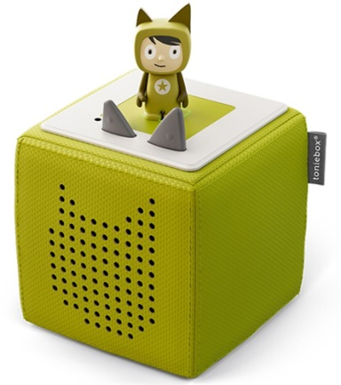
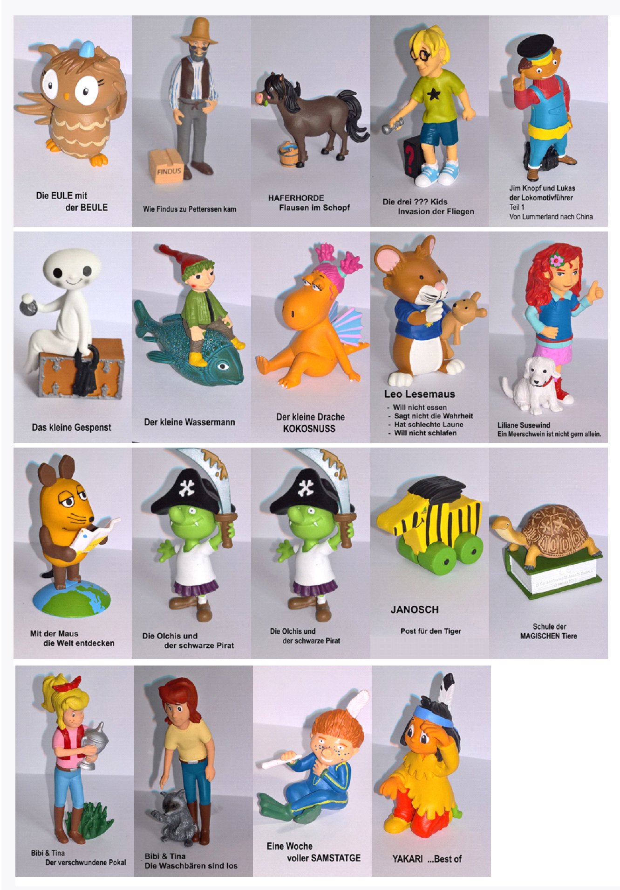
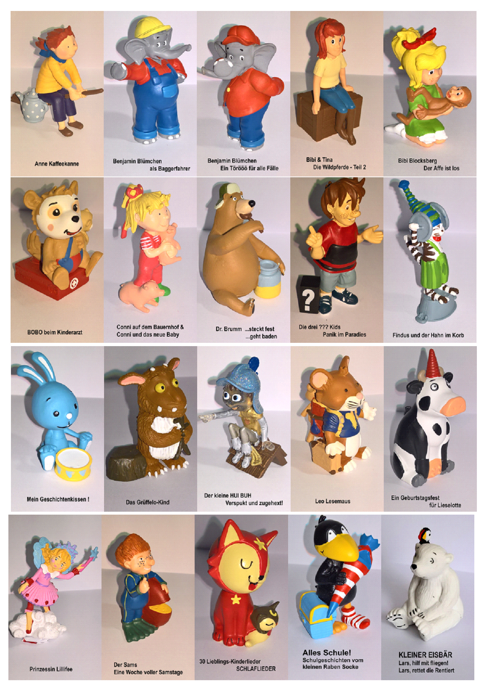

Neu in der Bücherei – tonies-figuren …ab sofort ausleihbar!
Das neue Audio-System für Kinder
Die tonies – das moderne Audio-System für Kinder – sind aktuell in aller Munde und die tonies-figuren jetzt auch bei uns ausleihbar. Mit den tonies-Hörfiguren werden digitale Inhalte greifbar. Allerdings benötigt man dazu eine eigene „toniebox“, da diese Box in der Bücherei nicht ausgeliehen werden kann.
Egal ob aufregende Abenteuer, Wissen pur oder Lieblingslieder – für jede Stimmungslage gibt es einen passenden tonie. Setzt man diesen auf die toniebox, wird der entsprechende Inhalt wiedergegeben. Bereits jetzt sind die stärksten Charaktere der deutschsprachigen Hörbuchszene als tonies verfügbar und die Auswahl wird stetig erweitert.
40 verschiedene tonies hat die Bücherei Bilfingen jetzt schon im Ausleihangebot.
Das kindgerechte Bedienkonzept möchte in einer immer hektischer werdenden Zeit dem konzentrierten Zuhören wieder mehr Raum geben. Zuhören ist gerade für die frühkindliche Entwicklung enorm wichtig: Hören ist die Basis für Spracherwerb, Lese- und Ausdrucksfähigkeit. Die toniebox kommt ohne ablenkende Elemente wie Bildschirm und Tasten aus und fasziniert allein durch die einzigartige Kombination aus Hören und Spielen. Auf spielerische Weise lassen sich Geschichten, Lieder und Wissensinhalte erschließen. Digitale Hörinhalte werden durch die tonies "anfassbar".
Ein Besuch in der Bücherei Bilfingen lohnt sich …wir freuen uns auf Ihren Besuch!